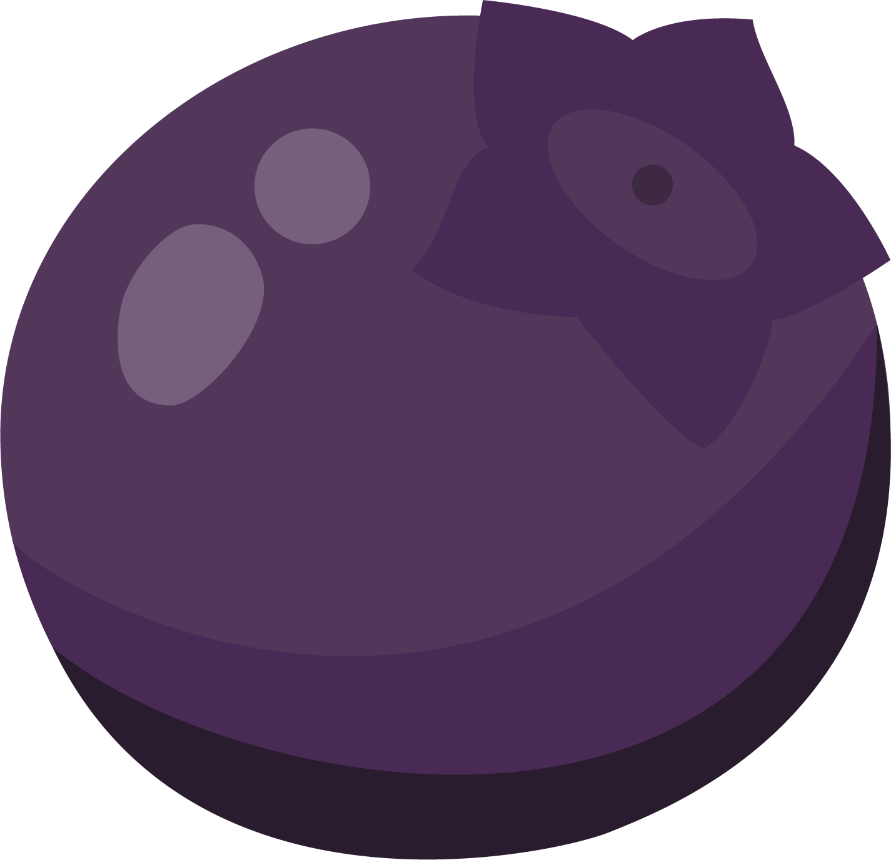
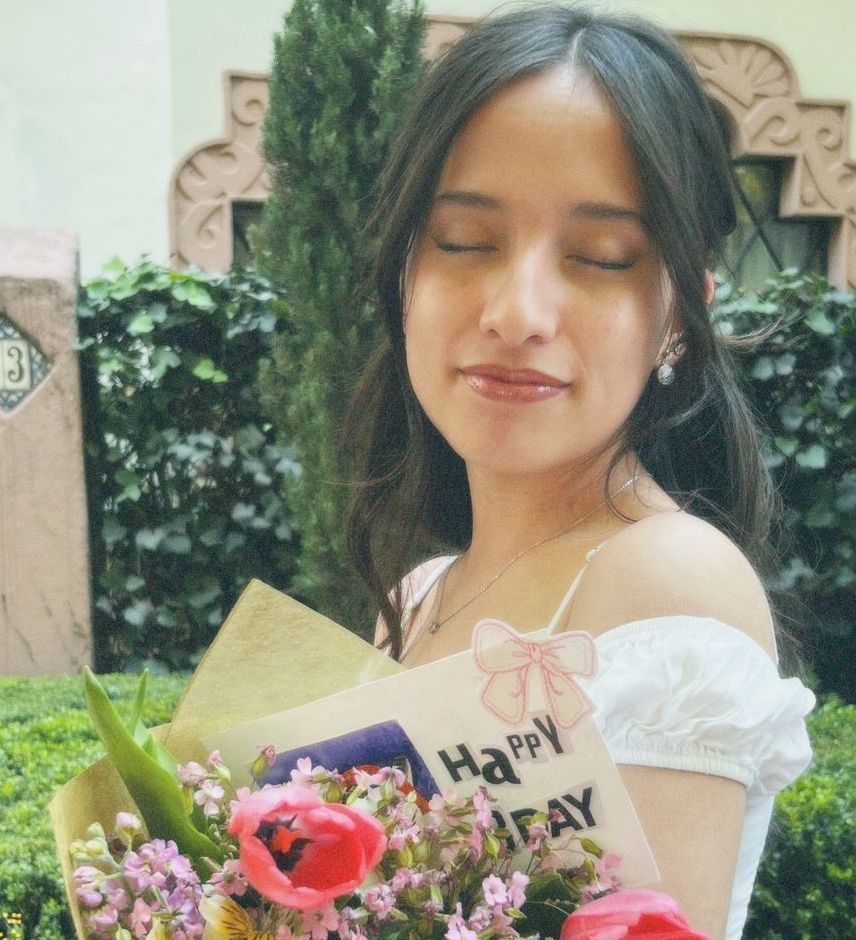

Siempre he tenido historias en la cabeza. Empecé escribiendo por el simple placer de imaginar personajes, mundos y vidas que NO existían en ningún otro lugar.
Algunas llegaron a Wattpad, otras encontraron su camino hasta TikTok y muchas siguen guardadas en mis cuadernos.
HOY sigo escribiendo. Porque, al parecer, siempre hay algo más que contar.